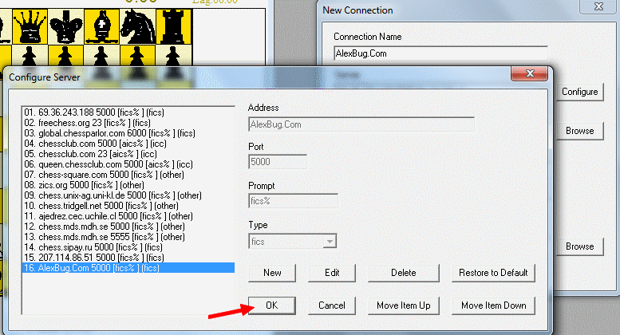

How to connect to BICS or any other new free internet chess server (ICS) using Thief Client Interface
Here is manual how to easy join any new ICS using Thief interface for playing chess, bughouse chess, crazyhouse etc.
Its showed on example of new BICS server called AlexBug.Com on port 5000.
Here is it step by step in pictures:
Run Thief and then follow pictures.





 Now You made new connection and logged to new internet chess server using Thief.
Now You made new connection and logged to new internet chess server using Thief.
Next time You can simply open connection You made.

For advanced users
First add to THIEF.SYS file (open for example in notepad or notepad++) new server on empty position, here example position 15:
Server 15 address=AlexBug.Com
Server 15 port=5000
Server 15 prompt=[fics% ]
Server 15 type=0
then u can create new connection selecting new server from list, timeseal or let it empty and handle (or use guest), save and connect.
But when u use in thief reconnect, it will when thief starts rewrite THIEF.SYS and delete it.
So if u have set all as u wish and only need this server of BICS, simply make it read only file. Thief then messaging error when starts that cannot write in, but after it all working fine.